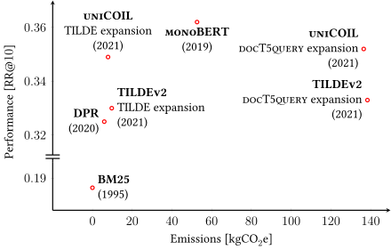
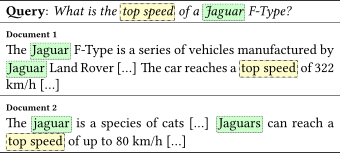
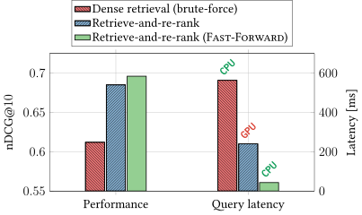
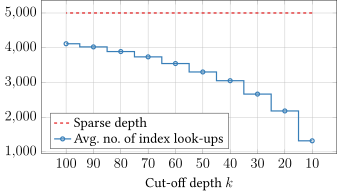
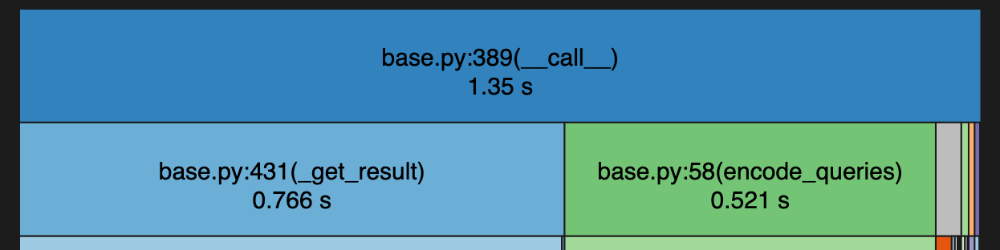
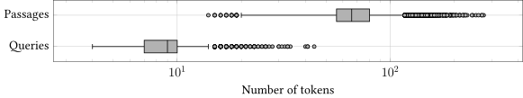
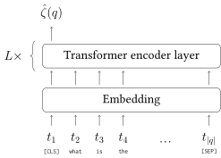
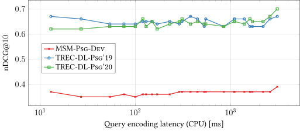

Efficient Neural Ranking
using Forward Indexes
Jurek Leonhardt
But what is ranking?
But what is ranking?
Aleph Alpha
https://aleph-alpha.com
Sovereign AI Solutions for Enterprises and Governments by ...
Our mission is to secure your sovereignty. We enable you to build and retain your own competencies, protect your data and IP, run, change and scale operations ...
NVIDIA Blog
https://blogs.nvidia.com › blog › what-is-sovereign-ai
What is Sovereign AI?
Sovereign AI refers to a nation's capabilities to produce artificial intelligence using its own infrastructure, data, workforce and business ...
European Council on Foreign Relations (ECFR)
https://ecfr.eu › Publications › European Power
Get over your X: A European plan to escape American ...
Despite the transformative potential of AI, the EU is reliant on the US for the chips and compute that AI requires as well as for the AI models ...
Ad-hoc ranking
Given an input query $q$, return a list of $k$ documents $d_i$ from a corpus, ordered by their relevance with respect to $q$.
$d_1$
Aleph Alpha
$d_2$
NVIDIA Blog
$d_3$
European Council on Foreign Relations (ECFR)
. . .
$d_k$
Ranking for the query "AI sovereignty".
Ranking is everywhere
Web Search
Ad-hoc retrieval
Online shopping
Recommender systems
Chatbots
Retrieval-augmented generation
thus...
Ranking should be efficient

Data from: Scells, Zhuang, and Zuccon. “Reduce, Reuse, Recycle: Green Information Retrieval Research”. SIGIR 2022.
But state-of-the-art neural models (often) aren't.
Background
Sparse retrieval
Sparse retrieval (mostly) uses lexical matching for ad-hoc retrieval.

Sparse retrieval example.
Lexical matching is fast and efficient, explainable by design, limited to matching terms.
Dense retrieval (vector search)
Documents and query are embedded in a common vector space using dual-encoder models.
Retrieval is performed as an (approximate) nearest neighbor search operation.
This is the de facto standard for current RAG setups.
The vector space is often $768$-dimensional.
Retrieve-and-re-rank
Retrieve-and-re-rank is a telescoping setting that has two stages.
📚
Corpus
→
1
Lexical retrieval
→
📄📄📄📄📄
📄📄📄📄📄
📄📄📄📄📄
📄📄📄📄📄
Candidates
→
2
Semantic re-ranking
→
#1 D371 (0.95)
#2 D222 (0.85)
#3 D984 (0.71)
Final ranking
Fast-Forward indexes
Jurek Leonhardt, Koustav Rudra, Megha Khosla, Abhijit Anand, and Avishek Anand
Efficient Neural Ranking Using Forward Indexes, TheWebConf 2022
Motivation
Sparse retrieval is fast, but not competitive on its own.
Re-ranking using dense retrieval models works well.
Score interpolation further helps:
$\phi (q, d)$ $= \alpha$ $\phi_S (q, d)$ $+\ (1 - \alpha) $ $\phi_D(q, d)$

Results on TREC-DL-Doc’19.
Fast-Forward indexes
Interpolating lexical retrieval and semantic re-ranking scores improves the performance:
$\phi (q, d) = \alpha \cdot \underbrace{\phi_S (q, d)}_{\text{retrieval}} + (1 - \alpha) \ \cdot$ $\underbrace{\phi_D(q, d)}_{\text{re-ranking}}$
Our approach: Efficient re-ranking with dual-encoders.
A Fast-Forward index is a look-up table for pre-computed document representations:
$\phi_D^{FF} (q, d)$ $= \zeta (q) \cdot \eta^{FF} (d)$
Fast-Forward indexes
The look-up operation is much more efficient than actual re-ranking:

TCT-ColBERT on TREC-DL-Doc’19.
Passage ranking results

Passage ranking results. Latency measured on CPU.
Early stopping
Many tasks require only a small number of documents (e.g., the top-$3$).
Lexical (sparse) and semantic (dense) scores are usually correlated.
In many cases, it is not necessary to compute all semantic scores.
Early stopping

The early stopping approach.
Early stopping
We set $k=3$ and $\alpha = 0.5$:
$\phi (q, d) = 0.5 \cdot \phi_S (q, d) + 0.5 \cdot \phi_D (q, d)$
Stop the computation once the highest possible score $\phi_{\text{max}} (q, d)$ is too low to make a difference.
$\phi_D$ is not normalized. We approximate its maximum as the highest observed score:
$\phi_{\text{max}} (q, \text{D224}) = 0.5 \cdot 0.73 + 0.5 \cdot 0.67 = 0.70$
| $\phi_S$ | $\phi_D$ | $\phi$ ↓ | |
|---|---|---|---|
|
|
|
|
|
|
|
|
Ranked documents.
Early stopping
We set $k=3$ and $\alpha = 0.5$:
$\phi (q, d) = 0.5 \cdot \phi_S (q, d) + 0.5 \cdot \phi_D (q, d)$
Stop the computation once the highest possible score $\phi_{\text{max}} (q, d)$ is too low to make a difference.
$\phi_D$ is not normalized. We approximate its maximum as the highest observed score:
$\phi_{\text{max}} (q, \text{D224}) = 0.5\ \cdot$ $0.73$ $ +\ 0.5\ \cdot$ $0.67$ $ \gt $ $0.68$
| $\phi_S$ | $\phi_D$ | $\phi$ ↓ | |
|---|---|---|---|
|
|
|
|
|
|
|
|
Ranked documents.
Early stopping
We set $k=3$ and $\alpha = 0.5$:
$\phi (q, d) = 0.5 \cdot \phi_S (q, d) + 0.5 \cdot \phi_D (q, d)$
Stop the computation once the highest possible score $\phi_{\text{max}} (q, d)$ is too low to make a difference.
$\phi_D$ is not normalized. We approximate its maximum as the highest observed score:
$\phi_{\text{max}} (q, \text{D105}) = 0.5\ \cdot$ $0.49$ $ +\ 0.5\ \cdot$ $0.71$ $ \lt $ $0.72$
| $\phi_S$ | $\phi_D$ | $\phi$ ↓ | |
|---|---|---|---|
|
|
|
|
|
|
|
|
Ranked documents.
Early stopping

ANCE on TREC-DL-Psg’19 with early stopping.

Ranking performance on TREC-DL-Psg’19.
Lightweight encoders
Jurek Leonhardt, Henrik Müller, Koustav Rudra, Megha Khosla, Abhijit Anand, Avishek Anand
Efficient Neural Ranking using Forward Indexes and Lightweight Encoders, TOIS 2024
Query encoding
For some settings, query encoding can become a bottleneck:

Profile of re-ranking 1k documents each for 43 queries.
Query characteristics
Web search queries are often short and simple:

The distribution of query and passage lengths in the MS MARCO corpus.
Intuition: Encoders should be adapted to these characteristics.
Lightweight query encoders
Queries are short and concise; a simple model should be able to represent them.

Self-attention-based query encoder.
Hyperparameters:
- Number of layers $L$
- Number of attention heads $A$
- Representation size $H$
BERTbase: $L=12$, $A=12$, $H=768$. Can we go lower?
Query encoder training
We train asymmetric dual-encoder models with a simple contrastive loss:
$$ \mathcal{L} \left( q, d^+, D^- \right) = -\log \left( \frac {\exp \left(\zeta(q) \cdot \eta(d^+) / \tau \right)} {\sum_{d^- \in D^- \cup \{d^+\}} \exp \left(\zeta(q) \cdot \eta(d^-) / \tau \right)} \right) $$
The resulting models do not achieve competitive performance in dense retrieval.
Efficient query encoders

Latency and ranking performance. Latency measured with batch size $256$.
Lightweight query encoders can achieve good performance as re-rankers.
Fast-Forward indexes in practice
Catalin-Petru Lupau
Quantization for Compact Neural Passage Re-Ranking, Master's thesis, 2024
Adrian Segura Lorente
Dynamic Hybrid Re-Ranking with Parameter-Efficient Adaptors, Master's thesis, 2025
Implementation
Core requirement: Fast disk-based look-up of vectors.
Specific use-case: Array slicing along single axis.
Current implementation: HDF5 with optional memory mapping.

Randomly accessing 50k out of 1M vectors.
Index compression
Product quantization commonly used to compress vectors for dense retrieval.
Fast-Forward indexes can be significantly compressed using PQ as well.

Latency for re-ranking 1k documents each for 43 queries.

Results on TREC-DL-Psg’19 (8.8M vectors).
Rank fusion
Rank fusion via linear interpolation requires hyperparameter tuning for $\alpha$:
$\phi(q, d) = \alpha \cdot \phi_S(q, d) + (1 - \alpha) \cdot \phi_D(q, d)$
We can optimize $\alpha$ directly, e.g., using a max-margin ranking loss:
$\alpha^* = \argmin_\alpha \sum_{(q_i, d_i^+, d_i^-) \in T} \max\{0, \gamma + \phi(q, d_i^-) - \phi(q, d_i^+) \}$
Demo: Python library
pip install fast-forward-indexes
What's next?
Low-resource settings
Dense retrieval has limitations in low-resource settings, struggling to beat term-matching approaches (BM25).
Do the same limitations apply for specialized domains?
How well can our approach mitigate this?

Retrieval results on 2AIRTC, an Amharic IR collection.
Data from: Yeshambel, Garouani, Molina, and Mothe. “Dense Retrieval for Low Resource languages - the Case of Amharic Language”. SIGIR 2025.